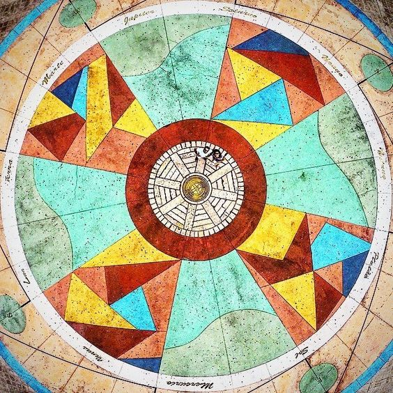

Marco Zero em Recife é um dos lugares mais emblemáticos e históricos da cidade
Conhecido como "Marco Zero da Cidade do Recife," é um local icônico e um verdadeiro tesouro histórico no nordeste do Brasil.
Este ponto de referência não é apenas o centro geográfico da cidade, mas também um símbolo poderoso da rica herança cultural
e histórica de Pernambuco. Ao explorar o Marco Zero, os visitantes têm a oportunidade de mergulhar na história, na cultura e na beleza da região.
História
O Marco Zero tem suas raízes históricas profundamente entrelaçadas com a fundação da cidade de Recife em 1537 pelos colonizadores portugueses.
Originalmente, era uma estaca de madeira cravada no solo, que servia como ponto de partida para medir as distâncias entre Recife e outras cidades do Brasil colonial.
Com o tempo, o local foi transformado em um monumento mais elaborado, incorporando elementos que representam a cultura e a identidade da região.

Cultura e Arte
O Marco Zero é um verdadeiro centro cultural em Recife. Muitos eventos culturais e festivais são realizados nesse local, especialmente durante o Carnaval de Recife,
quando o Marco Zero se transforma em um palco vibrante para apresentações musicais e desfiles de frevo. Além disso, ao redor do Marco Zero, você encontrará uma série
de esculturas e murais que retratam a história e a cultura de Pernambuco.
Além de sua importância histórica e cultural, o Marco Zero possui uma localização estratégica à beira do Rio Capibaribe, oferecendo uma vista espetacular da cidade
e de seu entorno. Pode-se apreciar a beleza do rio, as pontes, os edifícios históricos e modernos que se erguem nas margens. Passeios de barco estão disponíveis para
aqueles que desejam explorar a cidade a partir desta perspectiva única.
Gastronimia e Entretenimento
Os arredores do Marco Zero estão repletos de restaurantes e bares que servem a deliciosa culinária pernambucana. Experimente pratos tradicionais como a feijoada,
o bolo de rolo e, é claro, a famosa tapioca recheada. À noite, o local ganha vida com uma animada cena de entretenimento, com muitos bares e casas de shows oferecendo
música ao vivo e dança.
O Marco Zero em Recife é muito mais do que apenas um ponto de referência geográfico; é o epicentro da cultura, história e vitalidade de Pernambuco.
Ao visitar este local fascinante, você terá a oportunidade de explorar a rica herança desta região e apreciar a energia vibrante da cidade.
Não deixe de incluí-lo em seu roteiro ao explorar esta cidade encantadora do nordeste brasileiro.